作者：创世魂
● 概述
本组件虽然属于按钮组件，但是并未继承“按钮基础类”，只继承了“窗口组件”类,并且按钮无标题只能设置图片。
● 被单击(事件)
帮助文档如下图：
当按钮被鼠标左键点击后将触发本事件。
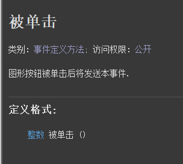
代码编写如下图：
1、设置两个图形按钮组件。
2、添加本事件后，通过“来源对象”参数可确定是哪个图形按钮点击。
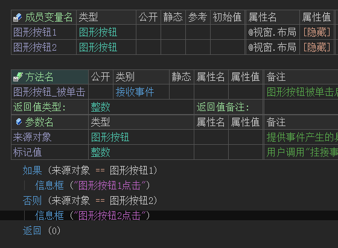
运行效果如下图：
最终图形按钮点击后会弹出不同的信息框。
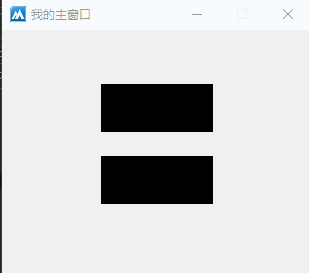
● 按下图片(写)
“正常图片”帮助文档如下图：
当鼠标离开图形按钮时显示的图片，如果想清空图片可使用“空资源.空位图”。
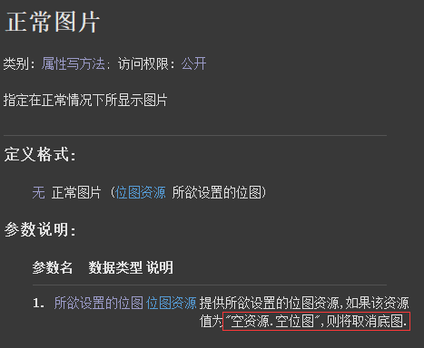
“按下图片”帮助文档如下图：
当鼠标左键点击组件后显示的图片。
如果想清空图片可使用“空资源.空位图”。
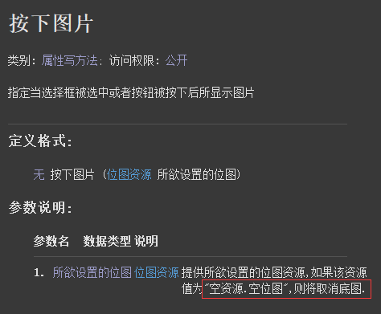
“正常图片”帮助文档如下图：
当鼠标经过组件时显示的图片。
如果想清空图片可使用“空资源.空位图”。
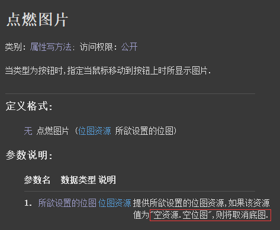
代码编写如下图：
在图形按钮属性栏分别设置以上三个属性。
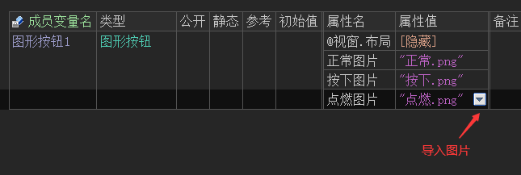
运行效果如下图：
最终呈现出来的效果和设置的属性一致。
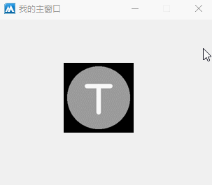
● 禁止图片(写)
帮助文档如下图：
当图形按钮被禁止操作后显示本图片。
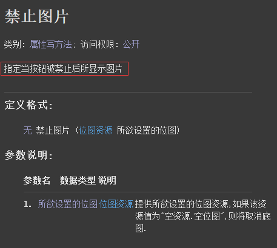
代码编写如下图：
1、在图形按钮属性栏设置本属性。
2、按钮点击后禁止本组件。
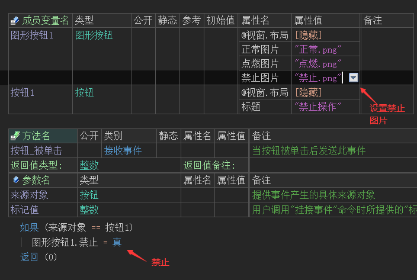
运行效果如下图：
最终图形按钮禁止后，图片将发生改变。
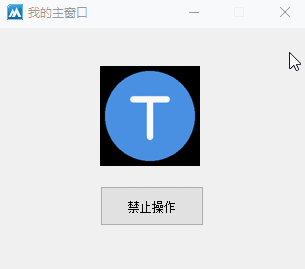
● 透明颜色(写)
帮助文档如下图：
如果想让图形按钮上面显示的图片部分颜色透明，可通过本属性进行设置。
例如：设置红色后，图片的红色部分想透明显示。
如果提供的图片是具有透明通道，可直接使用“颜色类.透明色”。
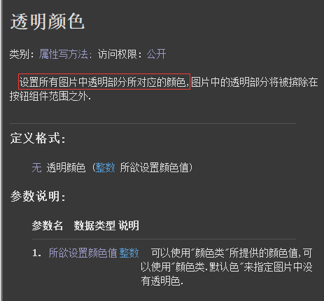
代码编写如下图：
1、给图形按钮设置一个具有透明通道的正常图片。
2、按钮点击后设置透明颜色为透明色。
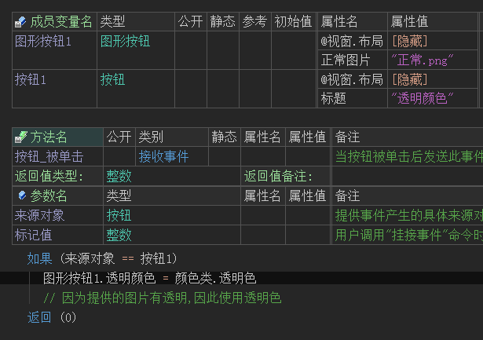
运行效果如下图：
软件运行后点击按钮，可看到原本按钮的黑色区域将进行透明处理。
注意：黑色区域为图形按钮颜色，并非图片颜色。
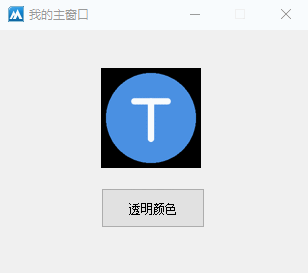